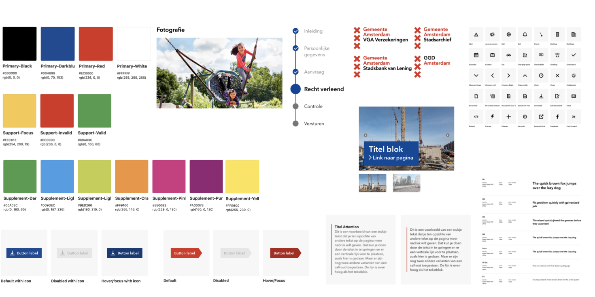

Visual interface design
Eerste jaar
Voor deze opdracht was het de bedoeling dat ik een inferface moestontwerpen zodat kinderen boeken kunnen vinden op een iPad in de bibliotheek. De opdrachtgever is de Gemeente Amsterdam. Ik moest mij houden aan de huisstijl van de Gemeente Amsterdam Wel moet het aansluiten bij de doelgroep. Dit zijn kinderen tussen de 10 en 15 jaar. Daarom moet de vormgeving speels zijn, maar wel passen bij de opdracht gever.
Om een goed beeld te krijgen van de huisstijl heb ik gekeken naar De website van de gemeente Amsterdam. Hier heb ik de belangrijkste elementen uitgehaald. Aangezien de huisstijl erg saai is wilde ik het opleuken omdat de boekenzoeker gemaakt is voor kinderen. Daarom heb ik gebruik gemaakt van hun subkleuren en een nieuwe patroon toegevoegd. Zo is het speels genoeg, maar wijkt het niet te veel af van de huidige huisstijl.
